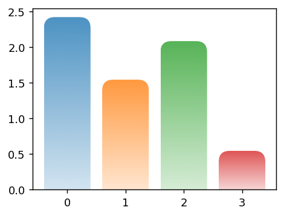

mpl-pe-fancy-bar is a module that includes patheffect classes that can be applied to bar plots created by Matplotlib which will transform the rectangles to other shapes.
The source code is available at github and it is pip installable.
pip install mpl-pe-fancy-bar
This was originally meant to be used with a collection of path from SVG, e.g., this example.
This tutorial won’t cover usage of SVGs. It will focus on simpler bars focusing on the usage of the module. The example below show the bars you can create with this module, and the rest of the post will provide a tutorial.
Code
import numpy as npimport matplotlib.pyplot as plt# Fixing random state for reproducibilitynp.random.seed(19680)# Example datan =4x_pos = np.arange(n)performance =5* np.random.rand(n)colors = [f"C{i}"for i inrange(n)]from matplotlib.path import Pathimport mpl_visual_context.patheffects as pefrom mpl_pe_fancy_bar import BarToArrow, BarToRoundBarfrom mpl_pe_fancy_bar.bar_with_icon import Icon, BarWithIconfig, axs = plt.subplots(2, 2, num=2, clear=True)pe0 = []pe1 = [(pe.RoundCorner(10, i_selector=lambda i: i in [2, 3])| pe.AlphaGradient("0.2 ^ 1."))]pe2 = [BarToArrow() | pe.AlphaGradient("0.2 ^ 1.")]circle = Path.unit_circle()icon_circle = Icon((-1, -1, 2, 2), circle)bar_with_circle = BarWithIcon(icon_circle, scale=0.6, dh=0.5)pe3 = [ BarToRoundBar() | pe.AlphaGradient("0.2 ^ 1."), bar_with_circle | pe.FillColor("w"),]for ax, patheffects inzip(axs.flat, [pe0, pe1, pe2, pe3]): bars = ax.bar(x_pos, performance, align='center', alpha=0.7, color=colors)for p in bars: p.set_path_effects(patheffects)
MPL’s own bar plot
We will set the stage with a simple bar plot.
import numpy as npimport matplotlib.pyplot as plt# Fixing random state for reproducibilitynp.random.seed(19680)# Example datan =4x_pos = np.arange(n)performance =5* np.random.rand(n)colors = [f"C{i}"for i inrange(n)]fig, ax = plt.subplots(1, 1, num=1, clear=True, figsize=(4, 3))bars = ax.bar(x_pos, performance, align='center', color=colors)
The idea of mpl-pe-fancy-bar is to use patheffects to transform the simple rectangle path, created by matplotlib, to another path. The idea is similar to FancyBox and FancyArrow in matplotlib.
We will start with mpl_visual_context module (which is required by mpl-pe-fancy-arrow). mpl_visual_context already contains some patheffects that you can use, and the patheffects of mpl-pe-fancy-bar are compatible with patheffects of mpl_visual_context. For example, mpl_visual_context.patheffects.RoundCorner can be applied to the rectangle path of the bar chart (RoundCorner itself can be applied to any path as far as they are not bezier spline).
import mpl_visual_context.patheffects as pepatheffects = [ (pe.RoundCorner(10, i_selector=lambda i: i in [2, 3]) # 2nd, and 3rd corners will be rounded.| pe.AlphaGradient("0.2 ^ 0.8")) # the path will be filled with gradient image whose alpha is 0.2# at the bottom and 1 at the top.]for p in bars: p.set_path_effects(patheffects)

mpl-pe-fancy-bar
mpl-pe-fancy-bar module includes simple patheffects (mostly for demonstration purpose).
from mpl_pe_fancy_bar import BarToRoundBarpatheffects = [BarToRoundBar() | pe.AlphaGradient("0.2 ^ 0.8")]for p in bars: p.set_path_effects(patheffects)
from mpl_pe_fancy_bar import BarToArrowpatheffects = [BarToArrow() | pe.AlphaGradient("0.2 ^ 0.8")]for p in bars: p.set_path_effects(patheffects)
Making Custom Shape
The included shapes are very limited. You are recommended to creat your own shape. We provide a BarTransformBase class. The key method is _get_surface which will take a single argument of bar height. The width of the bar is assumed to be 1 and the scaling will be taken care of automatically.
The example below will draw a circle near the top of the rectangle.
from mpl_pe_fancy_bar import BarTransformBase, BarToRoundBarfrom matplotlib.path import Pathclass CustomBar(BarTransformBase):def__init__(self, radius=0.3, orientation="vertical"):super().__init__(orientation=orientation)self._radius = radiusdef _get_surface(self, h): circle = Path.circle(center=(0., h-0.5), radius=0.3)return circlepatheffects = [ BarToRoundBar() | pe.AlphaGradient("0.2 ^ 0.8"), CustomBar() | pe.FillColor("w"),]for p in bars: p.set_path_effects(patheffects)
Adding Icon
Annotating a bar plot with an icon (simple path in this case) seems to be a frequent pattern, so mpl-pe-fancy-bar has its own support for adding an icon (its size will be proportional to the bar width).
from mpl_pe_fancy_bar.bar_with_icon import Icon, BarWithIconcircle = Path.unit_circle()icon_circle = Icon((-1, -1, 2, 2), circle) # the extent of the circle has # lower-left boundary of (-1, -1)# and size of (2, 2)bar_with_circle = BarWithIcon(icon_circle, scale=0.6, dh=0.5)patheffects = [ BarToRoundBar() | pe.AlphaGradient("0.2 ^ 0.8"), bar_with_circle | pe.FillColor("w"),]for p in bars: p.set_path_effects(patheffects)
Horizontal bars are also supported, but you need to specify the orientation explictly when creating the patheffetcs.